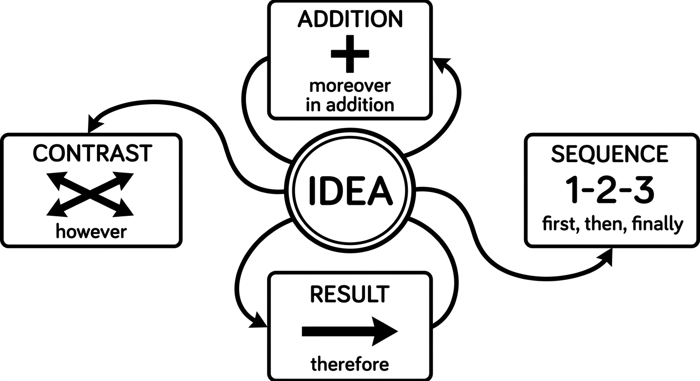
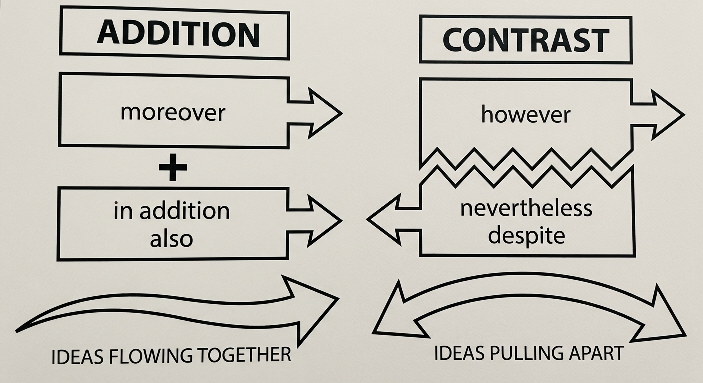
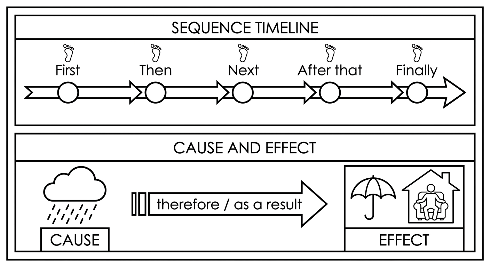
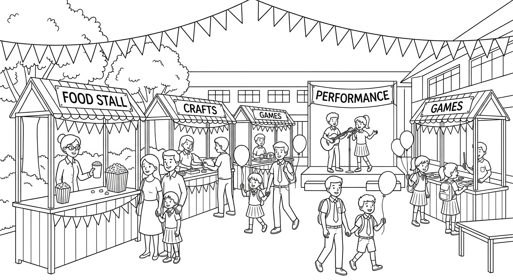
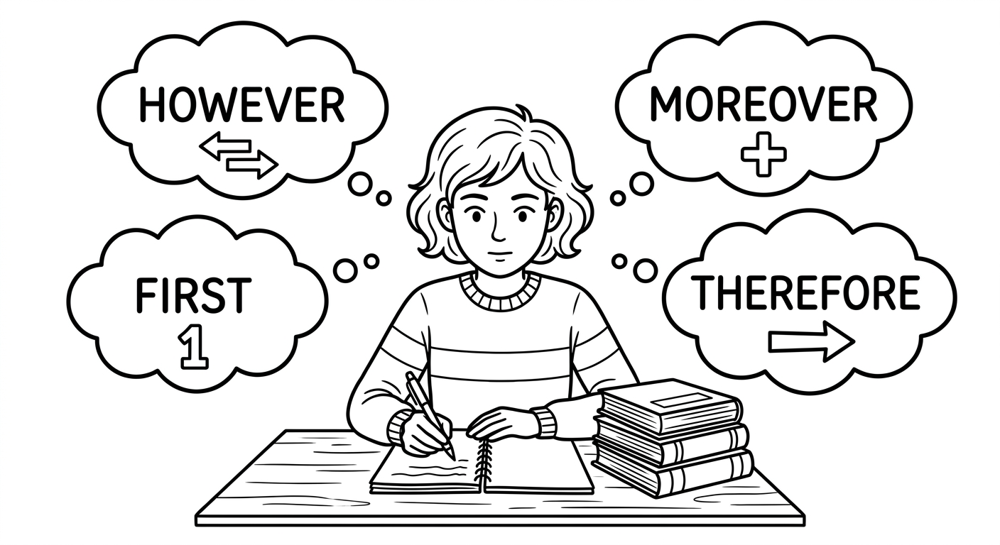

Connectors (Continued)
In this chapter, you will expand your knowledge of linking words and discourse markers. You will learn how to connect ideas using words for addition, contrast, result, and sequence — and how to choose between formal and informal connectors depending on the context.

Linking Words for Addition and Contrast
Addition connectors are used when you want to add extra information that supports or extends the same idea.
| Connector | Meaning / Use | Position in Sentence |
|---|---|---|
| also | adds extra information (neutral) | before the main verb; after "be" |
| too | adds extra information (informal) | end of the sentence |
| as well | same as "too" (informal) | end of the sentence |
| in addition | adds a new point (formal) | beginning of the sentence + comma |
| moreover | adds a stronger or more important point (formal) | beginning of the sentence + comma |
| furthermore | adds another point (very formal) | beginning of the sentence + comma |
| besides | adds an extra reason (informal/neutral) | beginning of the sentence + comma |
Pattern: Idea 1. In addition / Moreover / Furthermore, Idea 2.
Contrast connectors are used when two ideas are different, opposite, or when the second idea is unexpected.
| Connector | Meaning / Use | Position in Sentence |
|---|---|---|
| however | introduces a contrasting idea (formal) | beginning of new sentence + comma |
| on the other hand | presents an alternative viewpoint | beginning of new sentence + comma |
| nevertheless | "despite what was just said" (formal) | beginning of new sentence + comma |
| in spite of | "despite" + noun / -ing form | beginning or middle of sentence |
| despite | same as "in spite of" + noun / -ing | beginning or middle of sentence |
| whereas | compares two different things directly | joins two clauses (mid-sentence) |
| instead | in place of something | beginning or end of sentence |
Pattern: Idea 1. However, / Nevertheless, Idea 2.
Pattern: Despite / In spite of + noun/-ing, Idea.

Connectors: Addition and Contrast
| Connector | Português | Type | Register |
|---|---|---|---|
| Addition | |||
| also | também | addition | neutral |
| too | também | addition | informal |
| as well | também | addition | informal |
| in addition | além disso | addition | formal |
| moreover | além disso; ademais | addition | formal |
| furthermore | além do mais | addition | very formal |
| besides | além disso; além do mais | addition | informal/neutral |
| Contrast | |||
| however | porém; no entanto; contudo | contrast | formal |
| on the other hand | por outro lado | contrast | neutral |
| nevertheless | no entanto; mesmo assim | contrast | formal |
| in spite of | apesar de | contrast | neutral |
| despite | apesar de | contrast | neutral |
| whereas | enquanto; ao passo que | contrast | formal |
| instead | em vez disso; ao invés | contrast | neutral |
Examples: Addition Connectors
Rafael speaks English fluently. He also speaks Spanish.
Rafael fala inglês fluentemente. Ele também fala espanhol.
Bianca likes reading. She likes writing too. / She likes writing as well.
Bianca gosta de ler. Ela gosta de escrever também.
The school offers English and math courses. In addition, there are art and music classes.
A escola oferece cursos de inglês e matemática. Além disso, há aulas de arte e música.
The project was well organized. Moreover, all the students participated actively.
O projeto foi bem organizado. Além disso, todos os alunos participaram ativamente.
Recycling reduces waste. Furthermore, it helps protect the environment for future generations.
A reciclagem reduz o lixo. Além do mais, ajuda a proteger o meio ambiente para as futuras gerações.
I don't want to go out tonight. Besides, it's raining.
Não quero sair hoje à noite. Além disso, está chovendo.
Examples: Contrast Connectors
Gustavo studied very hard for the exam. However, he didn't get the grade he expected.
Gustavo estudou muito para a prova. No entanto, não tirou a nota que esperava.
Living in a big city is exciting. On the other hand, it can be very stressful.
Morar em uma cidade grande é empolgante. Por outro lado, pode ser muito estressante.
The weather was terrible. Nevertheless, the festival was a huge success.
O tempo estava péssimo. Mesmo assim, o festival foi um grande sucesso.
Despite the rain, Fernanda went for a run. / In spite of being tired, she finished the race.
Apesar da chuva, Fernanda foi correr. / Apesar de estar cansada, ela terminou a corrida.
Larissa loves the beach, whereas her brother prefers the mountains.
Larissa ama a praia, ao passo que o irmão prefere as montanhas.
We didn't go to the cinema. We stayed home and watched a movie instead.
Não fomos ao cinema. Ficamos em casa e assistimos a um filme em vez disso.
"However" usually starts a new sentence and is followed by a comma:
- She studied hard. However, she didn't pass. (CORRECT)
- She studied hard however she didn't pass. (WRONG — missing period and comma)
"Also" goes before the main verb but after "be":
- He also plays guitar. (before "plays")
- She is also a great singer. (after "is")
"Despite" and "in spite of" are followed by a noun or -ing form, never by a clause with a subject + verb:
- Despite the rain, we went out. (CORRECT — noun)
- Despite being tired, she continued. (CORRECT — -ing)
- Despite it rained, we went out. (WRONG — use "Although" for clauses)
Suggested time: 30 minutes
Activity: Write a simple sentence on the board (e.g., "The movie was long.") and ask students to continue it using addition connectors (e.g., "Moreover, it was boring.") and contrast connectors (e.g., "However, it was very interesting."). This shows how the same idea can go in different directions.
Common L1 interference: Brazilian students often confuse "but" and "however." Emphasize that "however" is more formal and starts a new sentence, whereas "but" joins two clauses in the same sentence. Also, students tend to use "despite" + clause (e.g., "Despite it was raining") — reinforce the noun/-ing rule.
Fill in each blank with the most appropriate connector from the box. Each connector is used only once.
Choose the best connector to complete each sentence.
Mariana studied all night for the test. _______, she got the highest score in the class.
b) Moreover_______ being very young, João is already an excellent swimmer.
b) DespiteBruno prefers to study in the morning, _______ his friend Rodrigo studies best at night.
c) whereasThe restaurant was expensive. _______, the food was not very good.
b) MoreoverThe train was cancelled. We took the bus _______.
b) insteadLinking Words for Result and Sequence
Result connectors show that the second idea is a consequence or result of the first idea.
| Connector | Português | Register | Position |
|---|---|---|---|
| therefore | portanto; por isso | formal | beginning of sentence + comma |
| as a result | como resultado; consequentemente | formal | beginning of sentence + comma |
| consequently | consequentemente | formal | beginning of sentence + comma |
| so | então; por isso | informal | joins two clauses (mid-sentence) |
| that's why | é por isso que | informal | beginning of sentence / mid-sentence |
Pattern: Cause. Therefore, / As a result, / Consequently, Result.
Pattern: Cause, so result.
Sequence connectors help you organize events or ideas in a logical order.
| Connector | Português | Use |
|---|---|---|
| first / firstly | primeiro; primeiramente | introduces the first step or point |
| then | então; depois | the next step |
| next | em seguida | the following step |
| after that | depois disso | the step that follows |
| meanwhile | enquanto isso | at the same time as another event |
| eventually | finalmente; por fim | after a long time or process |
| finally | finalmente; por último | the last step or point |
Pattern: First, ... Then, ... Next, ... After that, ... Finally, ...

Examples: Result Connectors
It rained all day. Therefore, the football match was cancelled.
Choveu o dia todo. Portanto, o jogo de futebol foi cancelado.
Juliana didn't study for the exam. As a result, she failed.
Juliana não estudou para a prova. Como resultado, foi reprovada.
The factory closed last year. Consequently, many people lost their jobs.
A fábrica fechou no ano passado. Consequentemente, muitas pessoas perderam o emprego.
Diego was feeling sick, so he stayed home.
Diego estava se sentindo mal, então ficou em casa.
I love animals. That's why I want to be a vet.
Eu amo animais. É por isso que quero ser veterinário(a).
Examples: Sequence Connectors
First, we bought the ingredients. Then, we prepared the cake. Finally, we decorated it with chocolate.
Primeiro, compramos os ingredientes. Depois, preparamos o bolo. Finalmente, decoramos com chocolate.
Gabriela was setting up the decorations. Meanwhile, Felipe was preparing the music playlist.
Gabriela estava arrumando as decorações. Enquanto isso, Felipe estava preparando a playlist de música.
We waited for the bus for over an hour. Eventually, it arrived.
Esperamos o ônibus por mais de uma hora. Por fim, ele chegou.
Dialogue: Telling a Story
Some connectors mean the same thing but are used in different situations. Choose the right one depending on the context!
| Formal (essays, reports) | Informal (conversations, emails) |
|---|---|
| therefore | so |
| furthermore / moreover | also / besides |
| however / nevertheless | but / still |
| consequently / as a result | so / that's why |
| in addition | too / as well |
Example:
- Formal: The experiment failed. Therefore, we had to repeat it.
- Informal: The experiment failed, so we had to repeat it.
Suggested time: 30 minutes
Activity: Ask students to tell a partner about their last weekend, using at least 3 sequence connectors and 1 result connector. The partner should listen and count how many connectors were used correctly.
Important note on "eventually": Brazilian students often confuse "eventually" (finalmente, por fim) with "eventualmente" in Portuguese (which means "possibly" or "occasionally"). Clarify this false cognate explicitly.
Fill in each blank with the most appropriate connector from the box. Each connector is used only once.
The sentences below tell the story of how Carolina prepared for a school science fair. Number them 1–8 to form a coherent paragraph. Pay attention to the connectors!
Reading: The School Festival

Every year, the Colégio São Paulo organizes a school festival in June. It is one of the most important events of the year, and both students and parents look forward to it. Last year, the festival was bigger and better than ever. However, organizing it was not easy — it required weeks of hard work.
First, the student council had a meeting to choose the theme. Some students wanted a music festival, whereas others preferred a cultural fair. After a long discussion, they decided on "Cultures of Brazil" because it would allow everyone to participate. Moreover, the teachers loved the idea because it was educational.
Then, the students were divided into groups. Each group was responsible for a different region of Brazil. For example, Beatriz's group presented the culture of the Northeast, whereas Caio's group focused on the Amazon region. In addition, there were groups for the South, the Southeast, and the Central-West.
Next, the real work began. The students had to prepare food, decorations, and presentations. Despite having only three weeks, everyone worked very hard. Beatriz's group made tapioca and cuscuz. Meanwhile, Caio's group was building a model of a river boat and learning about indigenous culture. Furthermore, Leticia's group prepared chimarrão and baked polenta for the South region stall.
However, there were some problems. First, the sound system broke two days before the festival. As a result, the music teacher, Professor Marcos, had to borrow speakers from another school. In addition, it rained on the morning of the festival, so the team had to move some of the outdoor stalls inside. Nevertheless, everyone stayed positive and found solutions quickly.
On the day of the festival, the school looked incredible. Besides the regional food stalls, there were dance performances, art exhibitions, and a storytelling corner. The students also organized a quiz about Brazilian culture, and the winning team received a prize. Rodrigo, who also plays guitar, performed a bossa nova song on stage. His performance was wonderful. Consequently, he became the most popular student in school for a whole week!
Finally, at the end of the day, the principal, Dona Marta, gave a short speech. She said the festival had brought the whole school community together. In spite of the problems, the event was a huge success. That's why everyone is already excited about this year's festival!
Pre-reading activity: Ask students: "Does your school have a festival? What activities do you usually have?" This activates prior knowledge and helps students relate to the text.
Reading strategy: Have students underline or highlight all the connectors as they read. After reading, ask them to classify each connector as addition, contrast, result, or sequence. This reinforces the lesson content through authentic use.
Read each sentence. Write T (True) or F (False) based on the text.
Answer the questions in complete sentences based on the text.
Why did the students choose "Cultures of Brazil" as the theme?
They chose "Cultures of Brazil" because it would allow everyone to participate. Moreover, the teachers loved the idea because it was educational.What two problems happened before the festival, and how were they solved?
First, the sound system broke, so Professor Marcos had to borrow speakers from another school. Second, it rained on the morning of the festival, so the team had to move some outdoor stalls inside.What activities were there at the festival besides the food stalls?
Besides the regional food stalls, there were dance performances, art exhibitions, a storytelling corner, a quiz about Brazilian culture, and a bossa nova guitar performance by Rodrigo.Find three different types of connectors used in the text and give one example of each.
Answers will vary. Examples: Addition: "Moreover, the teachers loved the idea." / Contrast: "However, organizing it was not easy." / Result: "As a result, the music teacher had to borrow speakers." / Sequence: "First, the student council had a meeting."Writing: Using Connectors in a Short Essay

Choose one of the topics below and write a short essay or story (120–180 words). You must use at least 8 different connectors from this chapter. Underline each connector you use.
Topic A: Write about a school event or trip you attended. Describe what happened step by step, what problems occurred, and how you felt about it.
Topic B: Write about the advantages and disadvantages of social media. Give reasons for your opinions and present both sides.
Topic C: Write about how you learned something new (a sport, an instrument, a recipe). Describe the process from beginning to end.
Before you start writing, plan your ideas:
- Introduction: Present the topic (1–2 sentences).
- Body: Develop your ideas. Use sequence connectors to organize steps, addition connectors to add points, contrast connectors to show different viewpoints, and result connectors to explain consequences.
- Conclusion: End with a final thought or summary (1–2 sentences).
Remember to choose between formal and informal connectors based on your topic. A school essay about social media = more formal. A story about a trip = more informal.
My topic: ___
My connectors (list at least 8):
My essay/story:
Suggested time: 25–30 minutes
Assessment criteria:
- Uses at least 8 different connectors from the chapter correctly
- Uses a mix of connector types (addition, contrast, result, sequence)
- Connectors are used in the correct position with correct punctuation
- The text has a clear introduction, body, and conclusion
- Word count is between 120–180 words
Extension activity: After writing, have students exchange essays with a partner. The partner should circle all the connectors and classify them as addition, contrast, result, or sequence. They should also check punctuation. This makes excellent peer-review practice.
Differentiation: For students who need more support, provide a writing frame with sentence starters that already include connectors. For advanced students, ask them to rewrite their essay changing the register (informal to formal, or vice versa).
Chapter 9 - Answer Key
Exercise 1: Complete with Addition or Contrast Connectors
Exercise 2: Choose the Correct Connector
Exercise 3: Complete with Result or Sequence Connectors
Exercise 4: Put the Sentences in Order
Exercise 5: True or False
Exercise 6: Answer the Questions
Exercise 7: Write a Short Essay or Story
Open-ended writing task. Answers will vary. Award marks based on the following criteria:
Total: 10 marks